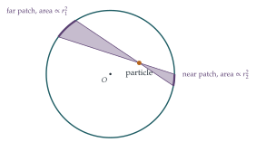
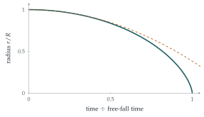

STEP III 1999, Question 9
Read the question before you go on. It is in the STEP Support Programme’s question database: step.maths.org/questions/99-s3-q9
The hook
Imagine a hollow planet: a thin spherical shell of rock with nothing inside. Standing inside it, near the wall, you might expect to be pulled towards the nearby rock. In fact you would float: the gravitational pull of the shell is exactly zero everywhere inside it. The near side of the shell is closer, but the far side is bigger, and the two effects cancel perfectly.
This is Newton’s shell theorem. It took Newton years to prove, and it was essential to his theory of gravity: together with its partner (outside a sphere, the pull is as if all the mass were at the centre) it justifies treating the Earth and the Sun as points. In the exercises and the What’s Really Going On section, the theorem is used to compute how long a cloud of gas takes to collapse into a star.
Before you start
Consider two small, diametrically opposite pieces of the ring. Draw the forces they exert on the particle. Which components cancel, and which add?
The two pieces are at the same distance from the particle. Their pulls have equal components along the axis, which add, and equal and opposite components perpendicular to the axis, which cancel. Pairing up the whole ring in this way, the net force is along the axis, towards the centre of the ring.
Working it through
Stage 1 The ring
Every piece of the ring is at distance \(\sqrt{x^2 + r^2}\) from the particle, and the line to it makes angle \(\psi\) with the axis, where \(\cos\psi = \frac{x}{\sqrt{x^2 + r^2}}\). A piece of mass \(\delta m\) pulls with force \(\frac{G\,\delta m}{x^2 + r^2}\), of which the component along the axis is \(\frac{G\,\delta m}{x^2 + r^2}\cdot\frac{x}{\sqrt{x^2 + r^2}}\). Every piece has the same distance and the same angle, so the components simply add up to \[\frac{Gmx}{(x^2 + r^2)^{3/2}}. \qed\]
Stage 2 Slicing the shell into rings
Put the centre of the shell at \(O\) and the particle on the axis at distance \(b\) from \(O\). Slice the shell into thin rings perpendicular to the axis, labelled by the angle \(\phi\) that a point of the ring makes with the axis at \(O\). What are the radius, the position and the mass of the ring?
The ring at angle \(\phi\) has radius \(a\sin\phi\) and its centre is at distance \(a\cos\phi\) from \(O\) along the axis, so at distance \(a\cos\phi - b\) from the particle. Its width is \(a\,\delta\phi\), so its area is \(2\pi a\sin\phi \cdot a\,\delta\phi\), a fraction \(\frac12\sin\phi\,\delta\phi\) of the shell’s area \(4\pi a^2\). Its mass is \(\frac12M\sin\phi\,\delta\phi\). By Stage 1, it pulls the particle along the axis, towards the \(\phi = 0\) end, with force \[\frac{G\cdot\frac12M\sin\phi\,\delta\phi\,(a\cos\phi - b)}{\bigl((a\cos\phi - b)^2 + a^2\sin^2\phi\bigr)^{3/2}} = \frac{GM}{2}\cdot\frac{(a\cos\phi - b)\sin\phi\,\delta\phi}{(a^2 - 2ab\cos\phi + b^2)^{3/2}}.\] (The sign takes care of itself: rings beyond the particle, with \(a\cos\phi > b\), pull one way, and rings behind it pull the other.)
Stage 3 The right variable
The denominator involves \(s^2 = a^2 - 2ab\cos\phi + b^2\). What does \(s\) represent geometrically? What is \(\mathrm{d}s\) in terms of \(\mathrm{d}\phi\)?
By the cosine rule, \(s\) is the distance from the particle to the ring. Differentiating, \(2s\,\mathrm{d}s = 2ab\sin\phi\,\mathrm{d}\phi\), and solving \(s^2 = a^2 - 2ab\cos\phi + b^2\) for \(a\cos\phi\) gives \(a\cos\phi - b = \frac{a^2 - b^2 - s^2}{2b}\). So the total force is \[\frac{GM}{2}\int \frac{a^2 - b^2 - s^2}{2b\,s^3}\cdot\frac{s\,\mathrm{d}s}{ab} = \frac{GM}{4ab^2}\int_{a - b}^{a + b}\Bigl(\frac{a^2 - b^2}{s^2} - 1\Bigr)\mathrm{d}s,\] where \(s\) runs from \(a - b\) (the nearest point, \(\phi = 0\)) to \(a + b\) (the farthest, \(\phi = \pi\)).
Stage 4 It vanishes
\[\int_{a-b}^{a+b}\Bigl(\frac{a^2 - b^2}{s^2} - 1\Bigr)\mathrm{d}s = (a^2 - b^2)\Bigl(\frac{1}{a - b} - \frac{1}{a + b}\Bigr) - 2b = (a^2 - b^2)\cdot\frac{2b}{a^2 - b^2} - 2b = 0.\] The shell exerts no force on the particle.■
What changes if the particle is outside the shell, with \(b > a\)? The limits of \(s\) become \(b - a\) and \(b + a\). Redo the last line and show that the force is \(\frac{GM}{b^2}\) towards the centre, as if all the mass were concentrated there.
Looking back
Symmetry first. Pairing opposite pieces showed the direction of the force before any calculation.
Build up from simpler shapes. Points made a ring; rings made a shell.
Choose the variable that matches the physics. Changing from the angle \(\phi\) to the distance \(s\) turned an awkward integral into a trivial one.
What’s really going on
Newton’s cone argument
Newton’s own proof (Principia, Book I, Proposition 70) uses no integration at all. Draw a narrow double cone with its vertex at the particle, cutting the shell in two small patches (Figure 10.7.1). The areas of the patches are proportional to the squares of their distances from the particle, \(r_1^2\) and \(r_2^2\) (the patches make equal angles with the cone, since a chord meets a circle at equal angles at its two ends). So their masses are proportional to \(r_1^2\) and \(r_2^2\), and their pulls, proportional to mass divided by distance squared, are equal and opposite. Every double cone through the particle cancels, so the total force is zero. The inverse-square law is exactly what makes the cancellation work: with any other power of distance, the shell would push or pull.

Collapsing clouds
STEP III 1987 Q14 uses the theorem the other way round. Outside a uniform sphere, the pull on a particle at the surface is \(GMm/r^2\), as if the whole mass were at the centre. Now take a uniform spherical cloud of dust, at rest, of radius \(R\) and mass \(M\), and let it collapse under its own gravity. A particle on the surface feels only the mass inside it, which stays \(M\) as everything falls inwards, so its inward speed \(v = -\dot r\) satisfies \[v\frac{\mathrm{d}v}{\mathrm{d}r} = -\frac{GM}{r^2}, \qquad\text{so}\qquad v^2 = 2GM\Bigl(\frac1r - \frac1R\Bigr).\] Substituting \(r = R\cos^2\alpha\) (one of the exercises) gives the time to reach radius \(r\) as \(\sqrt{\frac{R^3}{2GM}}\bigl(\alpha + \frac12\sin 2\alpha\bigr)\). The whole cloud collapses to a point when \(\alpha = \frac\pi2\), after the free-fall time \[t_{\text{ff}} = \frac{\pi}{2}\sqrt{\frac{R^3}{2GM}} = \sqrt{\frac{3\pi}{32G\rho}},\] where \(\rho\) is the density. Remarkably, every shell of the cloud reaches the centre at the same moment, since the time depends only on the density (Figure 10.7.2). For a typical interstellar cloud, with about \(10^{-17}\) kg per cubic metre, \(t_{\text{ff}}\) is around \(700\,000\) years: this sets the timescale on which stars form.

Newton had the inverse-square law by the 1660s, but did not publish his theory of gravity until 1687. One reason, according to some historians, was that he could not justify treating the Earth as a point mass until he had proved the shell theorem; once he had, the rest of the Principia followed. Today the theorem is a short consequence of Gauss’s law, which says that the total gravitational field flowing out through any closed surface is proportional to the mass inside. Take a sphere inside the shell, with the same centre. It encloses no mass, so the total flow through it is zero. That alone does not make the field zero (a uniform field has zero total flow through any closed surface, flowing in on one side and out on the other), but here symmetry helps: the field must point straight towards or away from the centre, with the same strength everywhere on the sphere, so zero total flow means zero field. The same law governs electric fields, which is why there is no electric field inside a charged metal shell, and why your car protects you from lightning.
The thinking skill
To find the effect of a continuous body, cut it into pieces whose effects you know, and add them up. Use symmetry to choose the pieces.
Points made a ring, rings made a shell, shells make a solid sphere. At university this is how every field is computed from its sources (gravitational, electric, magnetic), and it leads to the vector calculus of Gauss’s and Stokes’s theorems.
Try this next
Outside the shell. Complete the Pause box: show that outside the shell the force is \(\frac{GM}{b^2}\). Deduce that a solid uniform sphere of mass \(M\) pulls an outside particle as if its mass were at the centre.
The collapse time. Try STEP III 1987, Question 14. It finds how long a cloud of dust takes to collapse under its own gravity; a trigonometric substitution does the integral.
A tunnel through the Earth. Inside a uniform solid sphere, show that the force at distance \(b\) from the centre is \(\frac{GMb}{a^3}\), proportional to \(b\). Deduce that a ball dropped down a tunnel through the centre of the Earth oscillates with period \(2\pi\sqrt{a^3/(GM)}\), about \(84\) minutes, the same as the period of a satellite skimming the surface.
Another force law. If gravity followed an inverse-cube law, would the force inside a shell still be zero? (Repeat Stage 3 with \(\frac{1}{s^3}\) in place of \(\frac{1}{s^2}\).)
Further reading
Daniel Kleppner & Robert Kolenkow, An Introduction to Mechanics (Cambridge University Press), the chapters on gravitation, including the shell theorem.
Subrahmanyan Chandrasekhar, Newton’s Principia for the Common Reader (Oxford University Press). Newton’s proofs, including Propositions 70 and 71, explained by a Nobel laureate.
Andrew Pontzen, The Universe in a Box (Riverhead). How gravity, collapse and simulation explain the structure of the universe.